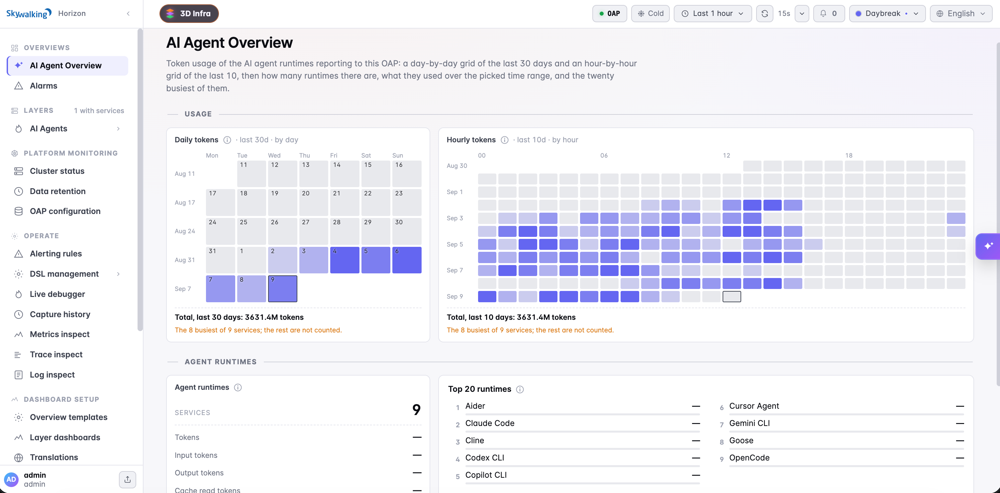
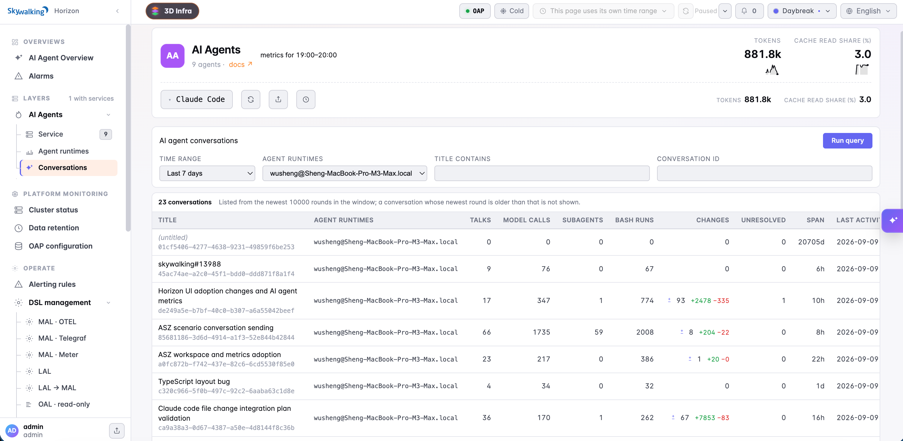
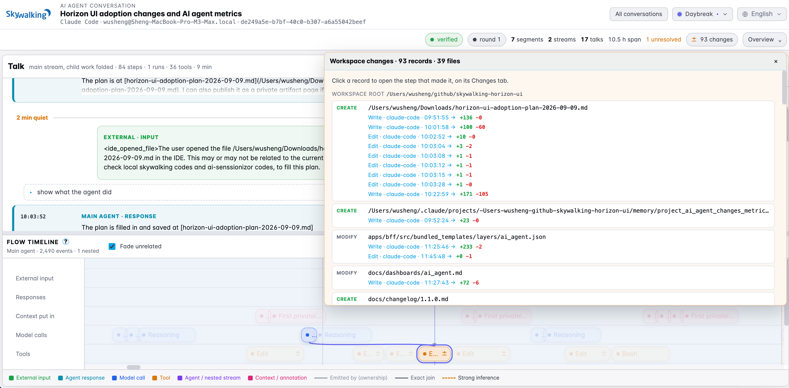
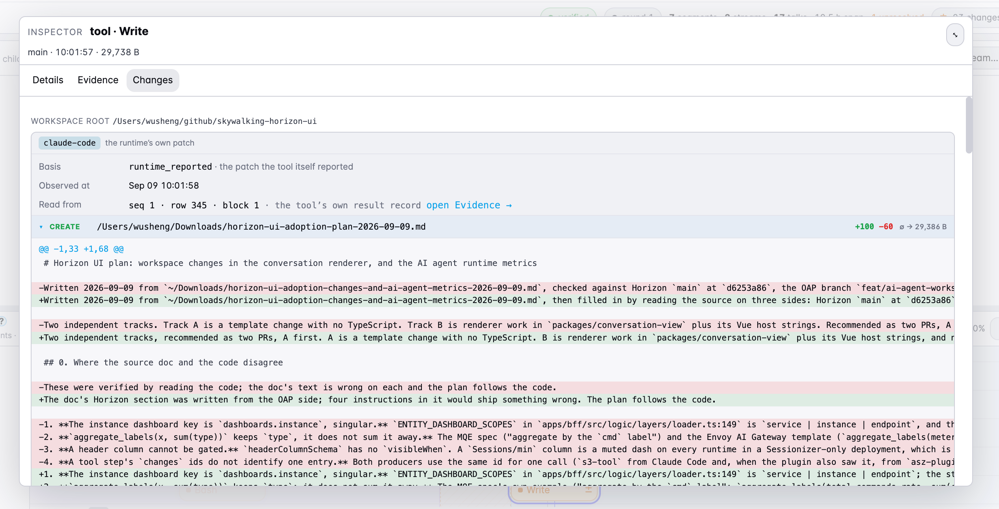

Beyond Replay: Metrics and Change Detection for Your Claude Code Sessions
In our first post on replaying Claude Code sessions, we started with a conversation already on your machine. You could replay its messages, inspect tool calls, and follow child agents through a long task. Remote observation and metrics dashboards were still on the agenda.
You can now understand what Claude Code did, what changed in the files it worked on, and what resources it consumed. Usage dashboards, conversation replay, and recorded file diffs let you examine agent work at two scales: activity across sessions and machines, and the details of an individual task.
That is where observability helps: you can compare usage over time, find a conversation worth investigating, and follow a recorded change to its tool call and source evidence. Central collection makes those records available to your team, so an investigation can continue beyond the machine where the task ran.
The screenshots below illustrate that workflow through our own development work, from usage patterns to individual conversations and file diffs.
See where your tokens are going
Usage across sessions and machines gives you context that an individual conversation cannot provide on its own. A team can review activity from its reporting runtimes in one place, compare it over time, and examine a particular machine more closely. The same views help an individual developer understand a week of work across many tasks.
The AI Agent Overview brings daily and hourly token heatmaps together with totals and a ranking of reporting agents. It gives you a place to start when reviewing usage: find busy periods, see which agents report the most tokens, and decide where to look more closely.

Figure 1: Daily and hourly heatmaps show how token usage develops over time. The footer makes coverage explicit: this example includes the eight busiest of nine reporting services.Agent dashboards then break usage down by token type, model, and main agent or subagent, with cache read share alongside them. Input, output, cache reads, and cache creation appear separately, making it easier to understand what contributes to a large token total. You can also inspect the same metrics for an individual agent runtime, such as the collector running on one machine.
For example, a rise in usage gives you a reason to compare models, look at main-agent and subagent activity, and examine the token types involved. The runtime view helps narrow that investigation to the machine reporting the activity. You can then search its conversations for the relevant period and inspect the work behind those trends.
The available measurements depend on the data you collect. Existing Claude Code transcripts provide a subset of token metrics. With Claude Code’s own telemetry exporter configured, the dashboards can also show reported cost by model, active time, sessions started, lines added and removed, commits, pull requests, and edit permission decisions. Those additional widgets appear when their metrics are reported; values are not estimated from conversation text.
The AI Agents dashboard guide explains the metrics and collection options, including how to select one token-reporting path so the same activity is not counted twice. The services shown in an overview reflect the telemetry being reported; conversation replay currently has a Claude Code adapter, with Codex and LangChain/LangGraph adapters still planned.
Find the conversations behind the activity
Once a period or agent deserves a closer look, the Conversations tab lets you search the collected conversations for that agent. Set the conversation query’s time range and filter by runtime, title text, or conversation ID, then open a conversation in its own tab.

Figure 2: The conversation list summarizes talks, model calls, subagents, Bash runs, and recorded changes before you open an individual task.This is the replay experience from the first post, now available through SkyWalking’s central UI. You can read the transcript beside its execution timeline, explore delegated work, and inspect the evidence behind a tool call. The address retains the selected talk, step, and stream, so a colleague with the required access can open the same position.
Metrics and conversations serve different parts of the investigation. Dashboards show usage patterns over time; the conversation records the requests, responses, and operations within a task. You can select the relevant agent and time range, find a conversation, and examine its work without returning to the originating machine.
See which files changed during the work
Replay now reaches into the workspace as well. A conversation carries recorded file changes, giving you a way to connect the discussion and tool activity with edits to actual files.
Open the Changes count in the conversation header to see affected files grouped by workspace root. Each file lists its recorded changes. Select one to jump to the associated tool step and open its change inspector.

Figure 3: This development conversation contains 93 change records across 39 files. Each linked record opens the tool step associated with that observation.The example is a conversation about adding the very agent dashboards and change inspection shown in this post. Its file list includes the planning document, dashboard templates, documentation, and changelog. Repeated edits remain visible under each path, so you can follow how a file evolved through the task without searching every mention in the transcript.
The count describes recorded observations. Several calls can edit one file, and separate sources can record the same call. Line totals can therefore include repeated changes to the same lines; use the individual diffs to inspect the work, and Git to review the final net change.
Read an edit in the context of the conversation
Tool cards and timeline steps now show change indicators. Expand a card to see affected paths, operations, and line counts, then expand a file to read its unified diff. A larger inspector gives longer diffs room to read alongside the conversation.

Figure 4: A recorded Write operation revises the planning document. The inspector shows the patch, its capture source and time, and a link to the supporting evidence.Here, the diff captures a revision to the plan after checking the repositories. The surrounding transcript retains the user’s request and the agent’s response. You can read what changed together with the discussion that led up to it, then inspect the recorded tool call and result.
Changes are linked through the tool-use ID. Each record also retains its capture source, so a patch reported by Claude Code and a workspace scan made around a shell command remain distinguishable. You can inspect the diff, the tool request and result, and the source record supporting their connection together. The conversation replay documentation describes the change indicators, file list, and inspector.
Include shell commands and delegated edits
The starting point remains straightforward: collecting existing Claude Code history requires no plugin or configuration changes in Claude Code. Successful editing calls such as Edit and Write can already carry native patches, which are extracted during collection. An older collection needs to be collected again to gain these records; reopening it in a newer viewer is not enough.
For broader capture, the optional asz-changes plugin adds before-and-after workspace scans around shell tools such as Bash, PowerShell, and Monitor, plus reported editing patches from subagents. This brings changes made by scripts and delegated work into the same inspection experience. Shell snapshots are available for activity observed while the plugin is installed.
The view also preserves capture limits. Overlapping tool windows can mark changes as shared, and changes detected between calls appear as Changes outside observed tool windows. Skipped or partial scans remain identifiable, and binary or oversized files may have paths and hashes without a text diff. A scan establishes what changed within its observation window; concurrent work can prevent attribution to one tool alone. See the plugin guide for the capture rules.
Observe the workflow you already use
You can keep using your usual terminal, editor, and Git workflow while collecting this evidence. Start with retained Claude Code history for replay and native editing patches; enable the optional plugin when you want broader change capture for future work.
The plugin captures changes locally and writes its own output independently of the Sessionizer server or any remote service. You can inspect collected conversations locally, then configure export when your team needs central storage, dashboards, and shared investigation. This lets you begin with one machine and extend observation across the machines you operate.
Try it with your Claude Code sessions
These capabilities are available in development toward AI Sessionizer 0.3.0, OAP 11.1, and Horizon UI 1.1. Sessionizer collects the local evidence and exports it to SkyWalking, where OAP stores the data and Horizon provides the dashboards and conversation views. The collected evidence retains the connections between conversations, tools, and file changes throughout that path.
To start locally, follow the quick start to build Sessionizer, then run:
./bin/asz server
Open http://127.0.0.1:8787. The command has changed since the first post: asz server now runs collection and the local viewer, while asz view reads an existing collection. To capture additional shell and subagent changes in a new Claude Code session, launch it from the Sessionizer checkout with:
claude --plugin-dir plugins/claude-code
For centralized inspection, configure export.otlp.endpoint in asz.yaml and use compatible development builds of OAP and Horizon. The export guide and backend conversation guide cover that setup. Choose your metrics source using the dashboard guide above, then open AI Agents in SkyWalking.
Start with a period of your Claude Code activity you know well. Review its token usage, find a conversation from that period, and inspect the files changed during the work. Enable collection on more machines as you need it: usage trends remain visible across the team, while each collected conversation retains the detail needed to inspect its recorded work.